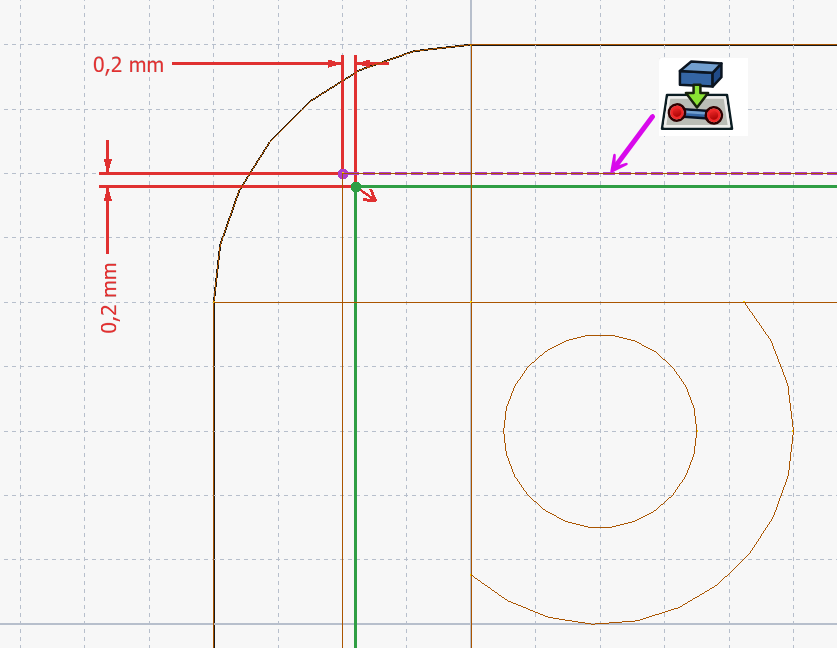

Deksel: tolerantie & passingCouvercle : tolérance & ajustementLid: tolerance & fit
Tijd voor het sluitstuk van je behuizing: een passend deksel. Hier botsen we op een van de belangrijkste lessen van 3D-printen: twee delen die je op exact dezelfde maat tekent, passen niet in elkaar. Je hebt speling nodig — en die is afhankelijk van je printer.Place à la touche finale : un couvercle ajusté. Une leçon clé de l'impression 3D : deux pièces aux mêmes cotes ne s'emboîtent pas. Il faut du jeu, qui dépend de l'imprimante.Time for the finishing piece: a fitting lid. Here we hit one of 3D printing's key lessons: two parts drawn at exactly the same size do not fit together. You need clearance — and it depends on your printer.
- uitleggen waarom passingen speling nodig hebben bij 3D-printexpliquer pourquoi un ajustement exige du jeuexplain why fits need clearance in 3D printing
- een deksel met een passende lip ontwerpenconcevoir un couvercle avec un rebord ajustédesign a lid with a fitting lip
- speling als richtwaarde toepassen en met een testprint verifiërenappliquer un jeu indicatif et le vérifier par un testapply a clearance guide value and verify it with a test print
Workbench: Part Design. Deksel = aparte Body.Atelier : Part Design. Couvercle = corps séparé.Workbench: Part Design. Lid = separate Body.
Lip met speling: schets onderaan, externe geometrie (H11), maat 0,2 mm naar binnen, dan Part Design → Pad + … → Afkanting.Rebord : croquis dessous, géométrie externe, 0,2 mm, Pad + Chanfrein.Lip: sketch underneath, external geometry, 0.2 mm inward, Pad + Chamfer.
- Maak een plaat ter grootte van de bovenkant.Plaque (taille du dessus).Plate (size of the top).
- Lip 0,2 mm kleiner → Pad omlaag.Rebord −0,2 mm → Pad.Lip 0.2 mm smaller → Pad.
- Onderrand Chamfer → OK.Chanfrein en bas.Bottom chamfer.
- Print een pashoekje en stem af.Coin d'essai → ajustez.Corner test → tune.
01Waarom "exact op maat" niet pastPourquoi « à la cote exacte » ne va pasWhy "exact size" doesn't fit
Op het scherm passen twee delen met identieke maten perfect. In het echt niet: gesmolten plastic zet licht uit, de eerste laag spreidt (de "olifantsvoet"), en gaten printen vaak ondermaats. Teken je deksel en bak op exact dezelfde maat, dan klemt het of gaat het helemaal niet. De oplossing is speling (jeu/clearance): een klein, bewust verschil tussen de twee delen.À l'écran, deux pièces identiques s'emboîtent. En vrai, non : le plastique gonfle, la 1ʳᵉ couche s'étale, les trous sortent petits. À cotes égales, ça coince. Solution : du jeu, un petit écart volontaire.On screen, two identical parts fit perfectly. In reality they don't: molten plastic swells slightly, the first layer spreads ("elephant's foot"), and holes print undersized. Draw lid and box at the same size and it jams. The fix is clearance: a small, deliberate gap.
02De speling: een richtwaarde, geen wetLe jeu : une valeur indicativeClearance: a guide, not a law
Lachiver gebruikt voor zijn deksel een speling van 0,2 mm tussen de lip en de wand. Dat is een goed startpunt — maar geen universele waarheid. De juiste speling hangt af van je printer, materiaal, nozzle en slicer. Zie 0,2 mm dus als richtwaarde die je voor jouw printer met een testprint verifieert.Lachiver utilise 0,2 mm de jeu entre le rebord et la paroi. Bon point de départ, mais pas universel : cela dépend de l'imprimante, du matériau, de la buse et du slicer. Vérifiez par un test.Lachiver uses 0.2 mm of clearance between the lip and the wall. A good starting point — but not universal. The right value depends on your printer, material, nozzle and slicer. Treat 0.2 mm as a guide to verify with a test print.

03Het deksel ontwerpenConcevoir le couvercleDesigning the lid
Een eenvoudig en betrouwbaar deksel heeft een lip: een opstaande rand aan de onderkant die nét in de opening van de bak past. Die lip teken je naar binnen verschoven t.o.v. de binnenwand, precies met de gekozen speling. Zo valt het deksel netjes in de bak en blijft het op zijn plaats.Un couvercle fiable a un rebord qui entre juste dans l'ouverture. Dessinez-le décalé vers l'intérieur du jeu choisi.A reliable lid has a lip: a downward rim that fits just inside the box opening. Draw it offset inward from the inner wall by your chosen clearance.
- 1Maak het deksel als een plaat ter grootte van de bovenkant van de bak.Waarom: dit wordt het bovenvlak dat de behuizing afsluit.Créez une plaque aux dimensions du dessus.Pourquoi : c'est la face qui ferme.Make the lid a plate the size of the box top.Why: this is the top face that closes the box.
- 2Teken aan de onderkant een lip, met de omtrek 0,2 mm (richtwaarde) kleiner dan de binnenopening van de bak.Waarom: die speling maakt dat de lip past in plaats van klemt.Dessinez un rebord 0,2 mm plus petit que l'ouverture.Pourquoi : le jeu permet l'emboîtement.Draw a lip 0.2 mm smaller than the box opening.Why: that clearance lets it fit instead of jamming.
- 3Geef de lip een kleine chamfer aan de onderrand.Waarom: dit geleidt het deksel naar binnen en verzacht de olifantsvoet.Chanfreinez le bas du rebord.Pourquoi : guide l'insertion, atténue le pied d'éléphant.Add a small chamfer to the lip's bottom edge.Why: it guides the lid in and softens elephant's foot.
Lachiver leidt het deksel parametrisch af van de bak (een "gekoppelde sub-vorm"), en lijnt de schroefgaten uit met de bevestigingsbusjes via externe geometrie (H11). Wijzig je later de bak, dan past het deksel mee. Zo blijft je behuizing één samenhangend, parametrisch geheel.Lachiver dérive le couvercle de la boîte (sous-forme liée) et aligne les trous sur les bossages (géométrie externe, H11). Tout suit les changements.Lachiver derives the lid from the box (a linked sub-shape) and aligns the screw holes to the bosses via external geometry (H11). Change the box later and the lid follows.
Speling is printer-, materiaal- en slicer-afhankelijk. Een passing die op de ene printer perfect is, klemt of rammelt op een andere. De printer, het materiaal en de slicer van de club zijn je ijkpunt. Druk eerst een klein pashoekje (een stukje bak + stukje deksel) en stem de speling daarop af voor je het hele deksel print.Le jeu dépend de l'imprimante/du matériau/du slicer. La machine du club est la référence. Imprimez un petit coin d'essai d'abord.Clearance depends on printer, material and slicer. The club's printer, material and slicer are your reference. Print a small corner test first, then tune.
Met bak én deksel heb je nu een volledige behuizing voor je printplaat of ARDF-ontvanger — afgewerkt, gesloten en met een opening voor je connector. Print eerst een pashoekje, kies dan je definitieve speling, en print het geheel.Boîte + couvercle = un boîtier complet pour votre récepteur ARDF. Testez le coin, puis imprimez le tout.With box and lid you now have a complete enclosure for your PCB or ARDF receiver. Test a corner, set the final clearance, then print the whole thing.
Ontwerp een deksel voor je bak met een lip die 0,2 mm kleiner is dan de binnenopening (richtwaarde). Geef de onderrand van de lip een kleine chamfer. Print enkel een pashoekje (een hoek van de bak + bijhorend stukje deksel) en test de passing. Te strak? Vergroot de speling met stapjes van 0,05 mm. Noteer welke waarde voor jullie printer werkt.Concevez un couvercle (rebord −0,2 mm), chanfrein en bas. Imprimez un coin d'essai et ajustez par pas de 0,05 mm. Notez la valeur qui marche.Design a lid with a lip 0.2 mm smaller than the opening, chamfer the lip's bottom. Print just a corner test and check the fit. Too tight? Increase clearance in 0.05 mm steps. Note what works for your printer.
04Veelgemaakte foutenErreurs fréquentesCommon mistakes
- Exact op maat tekenen. Zonder speling klemt of breekt de passing. Voeg altijd clearance toe.Cotes exactes. Sans jeu, ça coince. Ajoutez toujours du jeu.Drawing exact size. Without clearance it jams or cracks. Always add clearance.
- Te veel speling. Dan rammelt het deksel. Begin bij de richtwaarde en verfijn met een test.Trop de jeu. Le couvercle balotte. Affinez par test.Too much clearance. The lid rattles. Start at the guide value and refine by test.
- Olifantsvoet vergeten. De onderrand van de lip spreidt uit en klemt. Een kleine chamfer lost dit op.Pied d'éléphant oublié. Un petit chanfrein règle ça.Forgetting elephant's foot. The lip's bottom spreads and binds. A small chamfer fixes it.
Leg je printplaat niet plat op de bodem, maar zet hem op montagezuiltjes (standoffs): kleine staande cilinders met een schroefgaatje, op de plaats van de PCB-gaten. Werkwijze: teken op de bodem cirkels op de juiste posities, pad ze tot de gewenste hoogte, en maak er met een Pocket een schroefgaatje in. De plaat schroef je erop, mooi vrij van de bodem. Stem de gatdiameter af op je schroef of insert, en hou rekening met de speling uit dit hoofdstuk.Posez le PCB sur des plots : petits cylindres avec trou de vis, aux positions des trous du PCB. Dessinez des cercles, pad à la hauteur, pocket le trou.Don't rest the PCB on the floor — put it on standoffs: small pillars with a screw hole at the PCB hole positions. Draw circles, pad to height, pocket the screw hole. Match the hole to your screw/insert and mind the clearance from this chapter.
05Samenvatting
Een passend deksel vraagt speling, omdat geprinte delen op exact nominale maat niet in elkaar passen. Teken de lip naar binnen verschoven met een clearance (Lachiver: 0,2 mm — een richtwaarde die je met een testprint voor jouw printer afstemt), en geef de onderrand een chamfer. Koppel het deksel parametrisch aan de bak zodat alles samen wijzigt. Daarmee is je behuizing — en Niveau 2 — compleet.Un couvercle ajusté exige du jeu. Décalez le rebord vers l'intérieur (0,2 mm, indicatif, à tester), chanfreinez. Liez le couvercle à la boîte. Niveau 2 terminé !A fitting lid needs clearance, because parts at exact nominal size won't fit. Offset the lip inward (Lachiver: 0.2 mm — a guide to tune by test print), chamfer it, and link the lid to the box. Your enclosure — and Level 2 — is complete.
- Nooit op exact nominale maat voor passingen — voorzie speling.Jamais à la cote exacte — prévoyez du jeu.Never exact nominal size for fits — add clearance.
- 0,2 mm = richtwaarde; verifieer met een testprint op de clubprinter.0,2 mm = indicatif ; testez sur l'imprimante du club.0.2 mm = guide; verify with a test print on the club printer.
- Chamfer de lip-onderrand tegen de olifantsvoet.Chanfreinez le bas du rebord.Chamfer the lip's bottom edge against elephant's foot.